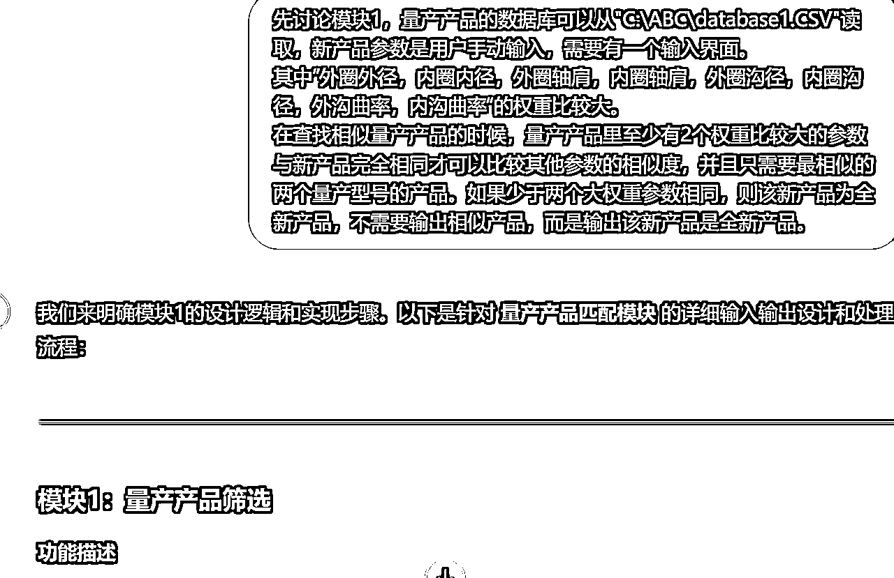

来源：https://fnuz0veosn.feishu.cn/docx/EPfRdVzX0okzdHxdKYRcele9nnb
大家好，我是阿讯，加入生财已经一年半，也成功从应届生转变成职场人。自从上一篇 后就没有写长文了。入职后的副业探索步伐有所放缓，但我始终保持着对AI发展的关注，尤其是在它如何影响传统行业的应用。
这篇文章主要是分享我从完全不懂编程，到成功开发出用于我们部门新产品评估的程序的过程。
（写到中途发现其实更想分享一些AI编程中的最少必要知识。并且以一个小白的角度用浅显易懂的语言去描述这些最少必要知识。）
近期看到很多圈子用AI编程做了很多互联网、自媒体相关的工具，但在我所在的传统机械制造行业，AI的影响却相对较为薄弱。为了探索AI在制造业的应用，我在去年就尝试用AI工具进行新产品评估。然而，由于新产品评估涉及到许多精确的产品参数处理，直接应用现有的AI并不容易，评估的准确性和细节要求让我始终未能突破。
直到最近，我看到Cursor AI编程工具的出现，这让我重新点燃了将新产品评估自动化的想法。通过Cursor，我终于能够克服了以往面临的技术瓶颈，实现了精准、高效的产品评估自动化。这不仅节省了大量时间，也提升了工作效率。今天，我就来分享我如何在没有编程基础的情况下，通过Cursor开发出这个工具，以及AI在传统机械制造行业中的应用前景。
作为大学期间非水课全挂、高数考7分的“混子”工程师。去年运气好入职了一家传统制造业的外企，在同事带我做了两次新产品评估后，我被要求独立完成新产品的评估工作，并给出所需的设备工装。这项工作让我感到无从下手。幸好，我很快意识到，新产品评估的过程其实就是将新产品信息输入系统，对比已有产品信息，然后评估现有产线的加工能力，并预测是否需要新购设备和工装。这个过程完全可以通过AI来替代，提高效率。
以往，我只能拿着Excel表格，对比新产品与已有量产产品的参数。对于经验丰富的同事来说，这个过程可能一个小时就能完成，但对我这种记性差且缺乏经验的工程师来说，至少需要半天时间。而且，我还需要找负责设备工装的老师傅，一个个地确认需要投资的设备。这样重复繁琐的过程不仅让我感到低效，也让我意识到，传统方式已经远远跟不上现代工程师的需求。
为了节省时间、提高评估的准确性，并且尽量减少新产品开发中的设备工装采购成本，我决定借助AI编程的力量，通过自动化手段来提升评估效率，从而在生产线规划和产品引入时，减少不必要的成本支出。
另一个动机是，公司总部正在招募“AI大使”，计划培养50名懂AI的培训师，然后由他们去培训5000名懂AI的工程师。这是一个难得的机会，我原本就是计划这一两年离职去做AI相关的创业，参加AI大使可以给我增加AI相关背书。
但考虑到我目前的机械基础薄弱，日常工作已经比较吃力，我的领导也不可能让我抽出至少三分之一的工作时间来参与AI培训。因此，我决定通过开发一款能够提升工程师工作效率的产品，来证明AI的巨大潜力，这样也能为我争取到成为AI大使的机会。
作为一名编程小白，真正接触编程还是9月的AI编程航海，我当时跟着航海手册学习了编程基础和安装编程环境，实战部分只尝试了贪吃蛇和合并文件夹的办公工具。全程基本上就跟着航海手册过了一遍，还是没有理解编程。
直到后面突然有一天看到圈友写的cursor编程应用的教程，这才重新开始用cursor编程新产品评估程序，一开始我还是在用GPT+PyCharm，后面才发现cursor的好用之处。
使用GPT+PyCharm编程需要把代码反复从GPT复制粘贴到PyCharm，并且复制到把调试信息复制回GPT解决的时候会占用大块聊天框，还容易出错，而cursor可以折叠代码，还能多开几个编辑栏调试代码。
在AI编程航海开始之前，我的计划就是只了解最少必要编程知识，搞明白代码是在哪里运行，编程环境长什么样，编程语言大概长什么样即可，其他交给AI。
代码并不会直接“运行”在你写的地方，它需要一个运行环境。这个环境称为 编程环境 或 开发环境。
你可以在自己电脑上安装一些工具（编辑软件和编程语言解释软件）来运行代码。对于 Python，你需要安装 Python 解释器（也就是计算机理解 Python 代码的“翻译器”，如Python3.10）和一个编辑器来写代码。
如PyCharm 是一种集成开发环境（IDE），帮助我们编写、调试和运行 Python 代码。
Python软件和PyCharmx可见9月AI编程航海手册
如果你不想安装任何软件，也可以使用 在线编程平台，这些平台会自动为你提供编程环境，并允许你直接在网页上编写和运行代码。
例如：
这些平台提供了一个网页编程界面，你只需在浏览器中写代码，然后点击“运行”按钮，代码就会在云端执行。
编程环境通常包括以下几个组成部分：
编程环境的编辑器是你写代码的地方，通常会有：
命令行是一个文本界面，你可以在其中输入命令并执行。对于 Python 编程，命令行通常用来：
编程语言是计算机与人类沟通的桥梁。不同的编程语言有不同的语法（规则和结构），就像人类的语言有不同的语法规则一样。我们编写的代码是由这种特定语言的语法构成的。
Python 语言示例：
编程语言基础概念
标识符 是程序中的名称，用来给变量、函数、类等命名，简单理解就是一串代码“=”前面的命名字符号，如下图。
标识符有一些简单的规则：
关键字 是 Python 语言保留的词，可以理解为一些“因为、所以、如果、、”这类平时我们使用的介词，它们有特殊含义，不能作为标识符使用。比如：if、else、for、while 等都是关键字。使用关键字作为标识符会导致错误。
缩进 是 Python 中的重要语法元素，表示代码的层次结构。如图中左边的“<”，可以折叠，便于理解。一般来说，缩进推荐使用 4 个空格。
表达式可以是一个简单的数字，也可以是更加复杂的数学运算或者逻辑判断。可以理解为一句话或者一段话，表达式的核心是计算，并最终得到一个结果。如下面的各种语句。
控制流语句 用来控制程序执行的顺序，可以理解成一些决策流程。常见的控制流语句包括 if、for 和 while。通过控制流语句，你可以让程序做出不同的决策或执行重复的操作。
赋值语句 是将一个值赋给变量的语句。用等号 = 来表示赋值语句，左边是变量，右边是要赋给变量的值。赋值语句会把右边表达式的结果存储在左边的变量中。
变量可以理解为一个“标签”或者“盒子”，你可以把信息（数据）放进这个“盒子”里，之后可以通过这个“标签”来找到这个信息。变量帮助我们在程序中存储和管理数据。
在 Python 中，定义一个变量非常简单。举个例子：
这里 age 就是变量，它存储的值是 25。你可以随时访问这个变量，看看它里面存的是什么。
就像日常生活中我们给人、物品起名字一样，变量的名字可以是任何你想要的，但要遵守一些简单的规则，比如不能以数字开头，不能用特殊符号。
变量所存储的数据的类型，比如，数字、文字、列表等都是不同的数据类型。在 Python 中，常见的数据类型有：
注释就是是写给人看的解释，不会影响代码运行。
单行注释 使用 #，适合解释一行代码。
多行注释 使用 ''' 或 """，适合解释多行或大段代码。
函数就是一个算法盒子，可以接收信息，然后按照算法逻辑输出信息。在 Python 中，函数通过 def 关键字来定义，函数可以接受参数，并且返回一个结果，即返回值
函数名：自定义的名称，用来调用函数。
参数：可选，用于传递数据给函数，多个参数用逗号分隔。
函数体：执行的代码，可以有多个语句。
返回值：可选，用于将函数的结果返回给调用者。通过 return 语句返回
库就是预先写好的代码集合，包含了许多常用的功能，可以直接在你的程序中使用。Python 的库大体上分为，可以直接使用的标准库（如处理数学计算、文件操作等）和需要安装的第三方库（比如处理数据的 pandas 库、用于科学计算的 numpy 库等。）
安装库：第三方库需要通过 pip（Python 的包管理工具）在终端中运行命令，安装命令如下：
pip install 库名
例如，你想安装一个名为 requests 的第三方库，可以执行以下命令：
pip install requests
引入库：
import 语句：直接引入整个库。
from ... import 语句：引入库中的特定功能或模块。
as 语句：为库或函数起一个别名，方便使用。
我们公司的新产品评估其实就是把研发提供的新产品图纸与现有产品进行对比，然后评估哪条产品可以以最少投资加工出来该新产品。
在开发新产品评估工具时，我首先明确了目标：通过程序自动化筛选出与新产品最相似的量产产品，并根据这些相似度评估哪条产线具备生产新产品的能力，以及所需新投资的设备工装采购情况。评估标准包括多个产品参数，最终，工具的目标是最小化新产品的工具采购成本，同时提高评估的速度和准确性。
然后AI就给出了实现该功能的模块，需要根据自己的需求和AI不断讨论，最终确定实现逻辑。
虽然它讲了很多，但其实我还是完全不知道如何下手，所以就直接问AI如何开始，让它一步步教我。
于是它就让我安装编程软件Python和编程环境，以及所需的库。
接着是创建编程文件和程序框架
写第一个模块，查找相似产品部分，我提供了整理的产品数据库，然后AI编写了第一个模块的代码。
先引入一些必要的存储、读取、计算的库，然后确定计算相似度的算法逻辑，同样是让AI告诉我替换那段代码或者提供完整代码。
在AI的推荐下，选了适合产品特性的加权欧几距离算法来计算相似度，说白了就是差值平方加权后再开方，以此评估产品参数的差异大小。
但是其实到这里的时候我人其实已经懵了，完全到处都是报错，而我的确按照吴佳文说的步骤搭建框架，然后完善各个模块，但是事实上遇到很多问题，这个时候我脑子就在想，程序员他们开发程序的流程是什么样的？也是搭建框架然后写各模块代码吗？
调整状态后又去找GPT问编程的流程是什么样的，GPT就提供了一个思路，让我从输入输出界面开始，所以我采用的流程是：搭建整体框架——设计输入输出界面——确定各模块核心算法——完善各模块代码。
最开始是只有产品参数输入界面，并且还需要鼠标点每一个输入栏，数据库也是CSV格式（一开始AI告诉我需要用CSV格式）。但其实到这里我发现已经满足我预想的需求了。我将其命名为新产品评估1.0版本，可以根据新产品参数找到最相似的产品型号。
但是在我进行下一个模块的时候就发现问题了，1.0版本在电脑上很容易出错，要么上数据库容易乱码，要么就是输入参数不符合逻辑之类的。然后就是一步步解决遇到的问题
诸如类似的各种调试问题，多轮测试下来对输入界面的需求就很清晰了。
要有参数输入界面，要能自动选取数据库，输入参数要进行逻辑验证，全新产品则不需要提供相似产品，还有输完一个参数按enter就进入下一个参数等等


对于第二个模块仍然是新开一个聊天窗口，然后讨论需求，让AI明确我们的需求，同时保证AI理解了我们的需求。
接着让AI给出实现需求所需的信息和数据库，然后给出算法逻辑，最后确认可行后再输出代码
通过前几步应该就可以得到各种报错的程序，以及不符合预期的程序，不过没关系，继续学习。

经过反复修改，我自己是已经看不懂写的啥了，并且出现各种乱七八糟的东西。于是把程序的各个模块分段发给AI，让它教我里面的编程语法，终于让我发现问题了。问题在于读取两个数据库的数据没有关联起来，修改程序的时候只修改了关键的部分，没有把前后关联起来。
最后，多次沟通后重新调整了第二个模块的算法。
首先根据第一个模块获得的相似型号和量产产品与产线的数据库来确定可以生产量产产品的产线；
然后通过产线的设备数据库判断哪些产线具备生产新产品的能力，以及缺少哪些设备。
最后输出具备生产相似产品的通道，推荐通道，不推荐的原因。
最后将两个模块以及输入输出界面模块加入到框架就完成新产品评估的2.0版本。
cursor经常把两个部分的代码放到一个代码块，然后我一开始看不懂代码就直接粘贴进去，结果各种报错。后面学乖了，一行一行的对比开头代码，然后只粘贴不一样的代码快。也可以把确定无误的代码快折叠起来，避免眼花缭乱。
第三方库的引入是需要在终端里下载的，前期经常因为不知道下载命令粘贴到哪里导致程序一直报错。然后又重新去向AI学习编程环境的组成以及库是个什么玩意才解决。
提交参数后跳出来两次输出窗口，后面一个个代码块分析后才发现是替换输出代码的时候原代码没有删干净。
感谢看到最后，这篇文章只是想给刚开始学AI编程的圈友一些信心和一些最少必要知识，因为学习任何一门新技能的前期都充满各种挫折，很多看起来完全想不通的问题，其实只是一些关键的概念没有理解，掌握最少必要知识相信任何一位圈友都可以轻松入门AI编程！加油，一起生财有术！